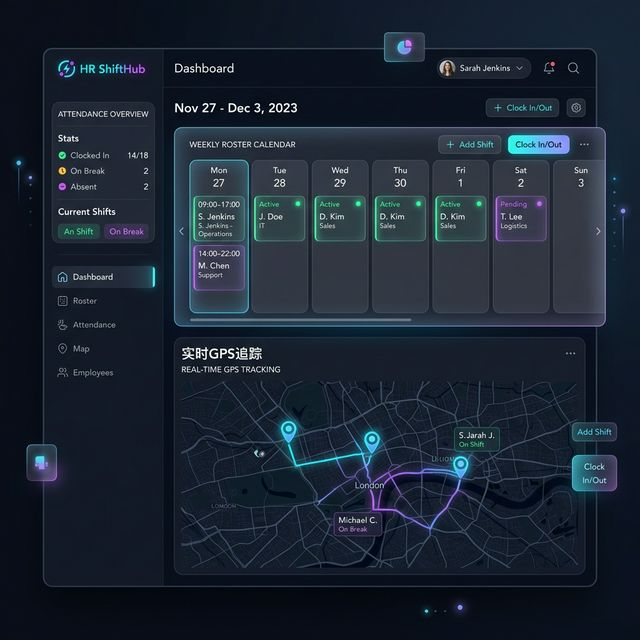
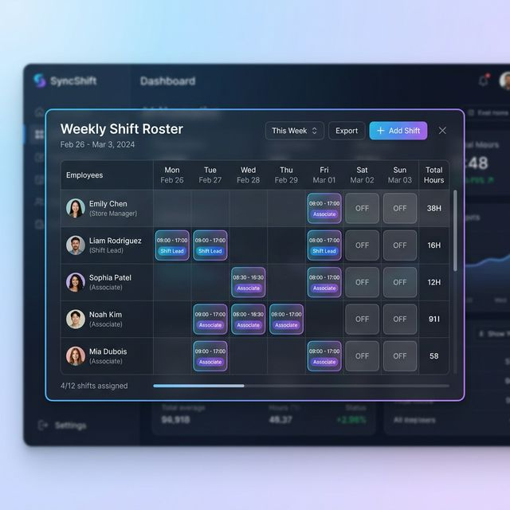

Sistem manajemen HR SaaS yang memadukan keamanan level-enterprise, penjadwalan shift bebas bentrok, serta pelacakan kehadiran berbasis GPS dalam satu platform yang mudah digunakan.

Otomatis Bebas Bentrok
Terkonfirmasi langsung
Singkirkan tumpukan spreadsheet. KantorApp mengotomatiskan seluruh alur manajemen karyawan multi-cabang Anda.
Atur cabang sepuasnya tanpa batas! Super Admin / Admin Lokasi dapat mengelola cabang secara independen. Dukungan custom tema.
Absensi aman dengan geo-fence (radius divalidasi) dan verifikasi foto wajah/self-checkin, cegah kecurangan dan absen palsu.
Penjadwalan roster secara algoritmis, anti-overlap, memblokir shift malam-ke-pagi untuk perlindungan "Fairness" dan menghindari burnout.
Penugasan berbasis katalog. Karyawan mengajukan target penyelesaian (slots), lalu melampirkan file/foto validasi untuk approval HR.
Sistem merangkum Target Kerja per bulan, laporan Absensi dan Lembur penuh (Full-Width), diekspor langsung ke XLSX/CSV/PDF secara bersih dan dapat dipetanggungjawabkan.

Singkirkan sistem lama, beralih ke SaaS absensi dengan Enterprise grade security (2FA) dan GPS geofence yang akurat.